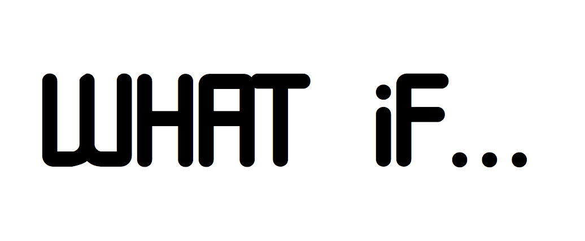
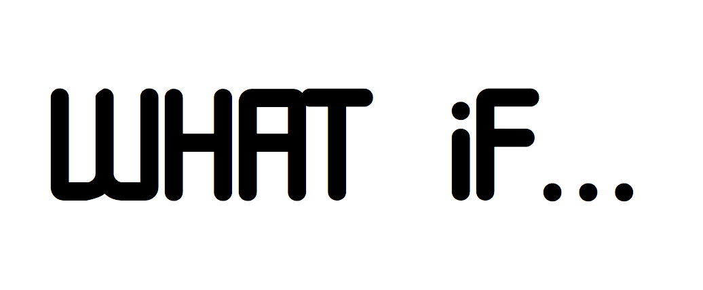
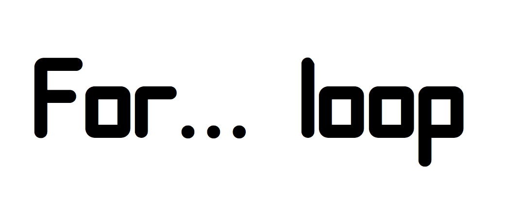

Learning objectives:
Learn the tools for controlling flow of execution.
Learn some technical pitfalls and (perhaps lesser known) useful features.


There are two main groups of flow control tools: choices and loops:
Choices (if, switch, ifelse, dplyr::if_else, dplyr::case_when) allow you to run different code depending on the input.
Loops (for, while, repeat) allow you to repeatedly run code
if() and else
Use if to specify a block of code to be executed, if a specified condition is true. Use else to specify a block of code to be executed, if the same condition is false.
(Note braces are only needed for compound expressions)
Can be expanded to more alternatives:
Why does this work?
x <- 1:10
if (length(x)) "not empty" else "empty"
#> [1] "not empty"
x <- numeric()
if (length(x)) "not empty" else "empty"
#> [1] "empty"if returns a value which can be assigned
#> [1] 1 2The book recommends assigning the results of an if statement only when the entire expression fits on one line; otherwise it tends to be hard to read.
When you use the single argument form without an else statement, if invisibly (Section 6.7.2) returns NULL if the condition is FALSE. Since functions like c() and paste() drop NULL inputs, this allows for a compact expression of certain idioms:
TRUE or FALSEA single number gets coerced to a logical type.
If the condition cannot evaluate to a single TRUE or FALSE, an error is (usually) produced.
Exception is a logical vector of length greater than 1, which only generates a warning, unless you have _R_CHECK_LENGTH_1_CONDITION_ set to TRUE.
This seems to have been the default since R-4.2.0
ifelse() is a vectorized version of if:dplyr::if_else()
Book recommends only using ifelse() “only when the yes and no vectors are the same type as it is otherwise hard to predict the output type.”
dplyr::if_else() enforces this recommendation.
For example:
Rather then string together multiple if - else if chains, you can often use switch.
Last component should always throw an error, as unmatched inputs would otherwise invisibly return NULL. Book recommends to only use character inputs for switch().
Example from book of “falling through” to next value
#> [1] 4#> [1] 4dplyr::case_whencase_when is a more general if_else and can be used often in place of multiple chained if_else or sapply’ing switch.
It uses a special syntax to allow any number of condition-vector pairs:
#> type value
#> 1 mean 1.652545
#> 2 median 1.063744
#> 3 trimmed 1.300568for (item in vector) perform_action
First example
#> [1] 1
#> [1] 1 2
#> [1] 1 2 3
#> [1] 1 2 3 4
#> [1] 1 2 3 4 5Second example: terminate a for loop earlier
next skips rest of current iterationbreak exits the loop entirely#> [1] 3
#> [1] 4
#> [1] 5When the following code is evaluated, what can you say about the vector being iterated?
xs <- c(1, 2, 3)
for (x in xs) {
xs <- c(xs, x * 2)
}
xs
#> [1] 1 2 3 2 4 6Preallocate output containers to avoid slow code.
Beware that 1:length(v) when v has length 0 results in a iterating backwards over 1:0, probably not what is intended. Use seq_along(v) instead.
When iterating over S3 vectors, use [[]] yourself to avoid stripping attributes.
xs <- as.Date(c("2020-01-01", "2010-01-01"))
for (x in xs) {
print(x)
}
#> [1] 18262
#> [1] 14610vs.
for (i in seq_along(xs)) {
print(xs[[i]])
}
#> [1] "2020-01-01"
#> [1] "2010-01-01"while(condition) action: performs action while condition is TRUE.
repeat(action): repeats action forever (i.e. until it encounters break).
Note that for can be rewritten as while and while can be rewritten as repeat (this goes in one direction only!); however:
Good practice is to use the least-flexible solution to a problem, so you should use
forwherever possible. BUT you shouldn’t even use for loops for data analysis tasks asmap()andapply()already provide less flexible solutions to most problems. (More in Chapter 9.)
#> [1] 1
#> [1] 2
#> [1] 3
#> [1] 4
#> [1] 5#> [1] 1
#> [1] 2
#> [1] 3
#> [1] 4
#> [1] 5#> [1] 1
#> [1] 2
#> [1] 3
#> [1] 4
#> [1] 500:16:34 Federica Gazzelloni: https://github.com/r4ds/bookclub-Advanced_R
00:22:28 Federica Gazzelloni: https://stackoverflow.com/questions/50646133/dplyr-if-else-vs-base-r-ifelse
00:26:20 Trevin: case_when() is great, makes it easy to read
00:54:01 Trevin: out[I, ]
00:54:14 Trevin: out[i, ]
00:55:03 Trevin: I think you have to specify number of rows and columns before..
00:55:30 Trevin: iterations = 10
variables = 2
output <- matrix(ncol=variables, nrow=iterations)
00:55:43 Trevin: https://stackoverflow.com/questions/13442461/populating-a-data-frame-in-r-in-a-loop00:40:18 Ryan Honomichl: What type of vector does each of the following calls to ifelse() return?
* "ifelse returns a value with the same shape as test which is filled with elements selected from either yes or no depending on whether the element of test is TRUE or FALSE."
00:42:11 Ryan Honomichl: "I recommend assigning the results of an if statement only when the entire expression fits on one line; otherwise it tends to be hard to read"
00:42:46 Ryan Honomichl: * When you use the single argument form without an `else` statement, `if` invisibly returns NULL if the condition is FALSE.
- Since functions like c() and paste() drop NULL inputs, this allows for a compact expression of certain idioms
00:54:15 collinberke: https://docs.google.com/spreadsheets/d/1ScrbEw_-vB9DruaJhjtVY8HLQmuNPqyWeOOjmG6OY1M/edit?usp=sharing
00:58:46 collinberke: https://www.youtube.com/@safe4democracy/videos